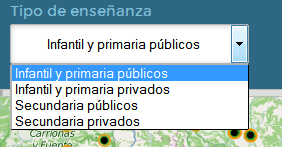
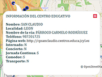

Esta seccion te ayudara a navegar por Ubicole

Ubicole está desarrollado para ayudarte a buscar los centros educativos que más se ajusten a tus preferencia en función de una ubicación y un tiempo de viaje.
Ubicole está pensado para cualquiera que busque información sobre centros educativos, ya sean padres que necesiten un colegio con una determinadas condiciones, profesores que buscan un lugar donde impartir clases o cualquiera que tenga una inquietud acerca de un centro educativo.
En esta sección te enseñaremos como realizar una búsqueda óptima que cumpla todas tus expectativas. Acompáñanos.
En este cuadro de texto debes introducir la dirección desde donde quieres buscar, a partir de ahí la aplicación buscará los centros educativos dentro del radio en minutos de búsqueda. La aplicación ha sido dotada con la potencia de google maps para ayudarte a encontrar la dirección que deseas.
Deberás introducir el tiempo de viaje en minutos, es decir, si introduces 30, la aplicación te proporcionará los centros educativos en un radio de viaje de 30 minutos.

Es necesario que elijas el tipo de enseñanza del centro educativo a buscar. Hemos separado las búsquedas para que te sea más útil la aplicación ya que hemos constatado que los usuarios buscan centros con unas características determinadas.
Por último ya sólo tienes que presionar el botón buscar. Recuerda que debes estar dado de alta en la aplicación. La aplicación en este momento comenzará a buscar los centro educativos que cumplen con tus criterios de búsqueda y aparecerán los resultados en un panel a la derecha del mapa.
Los centros educativos se resaltarán en azul en el mapa y se dibujará un polígono que representa los sitios a los que podrías llegar en coche en el tiempo que has indicado, la aplicación calcula las condiciones del tráfico y la utilización de autopistas.

Una vez que hayas realizado una búsqueda podrás consultar los datos de los centros educativos, de todos, no sólo los cumplen los criterios de búsqueda. En una burbuja de información aparecerán datos como la web, a la que se te redirifirá directamente, si tienen comedor, internado,...
Powered by: